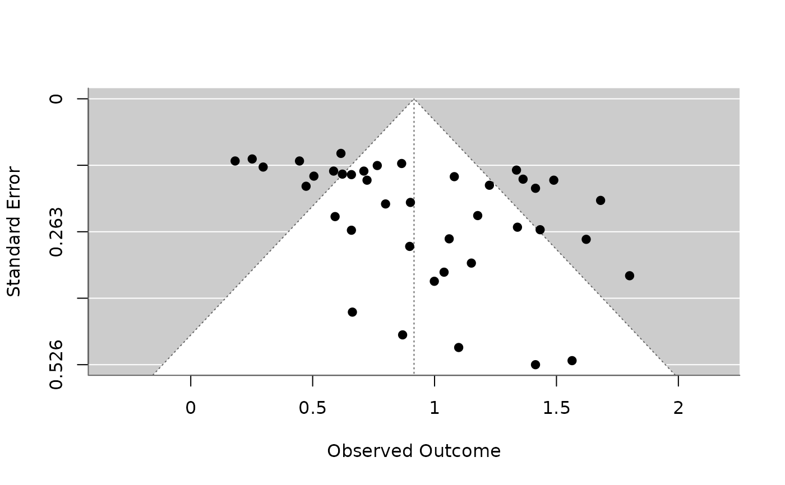

40 published studies of the bouba/kiki effect: how many participants matched bouba with a round and kiki with a spiky shape. The studies tested speakers of 21 languages. Studies with a non-significant result were less likely to be published, so the published effects are inflated. For random-effects meta-analysis, moderators, funnel plots and publication bias.
Format
A tibble with 40 rows and 8 columns:
- study
Study ID,
S01toS40.- year
Year of publication.
- language
Language of the participants.
- script
Writing system of the language:
"other"or"Roman".- n
Number of participants.
- congruent
Participants giving the congruent match.
- log_odds
Log-odds of a congruent match,
log((congruent + 0.5) / (n - congruent + 0.5)).- se
Standard error of
log_odds.
Details
True model: each study's true log-odds is 0.85 + 0.1 * Roman
plus a study effect with SD (tau) 0.35, about 70% congruent matches. Of
90 simulated studies, those with a significant positive result were
published with probability 0.95 and the rest with probability 0.3; the
first 40 published studies are included. Studies, years and samples are
invented.
References
Ćwiek, A., Fuchs, S., Draxler, C., Asu, E. L., Dediu, D., Hiovain, K., Kawahara, S., Koutalidis, S., Krifka, M., Lippus, P., Lupyan, G., Oh, G. E., Paul, J., Petrone, C., Ridouane, R., Reiter, S., Schümchen, N., Szalontai, Á., Ünal-Logacev, Ö., Zeller, J., Perlman, M. & Winter, B. (2022). The bouba/kiki effect is robust across cultures and writing systems. Philosophical Transactions of the Royal Society B, 377(1841), 20200390. doi:10.1098/rstb.2020.0390
Examples
if (requireNamespace("metafor", quietly = TRUE)) {
m <- metafor::rma(yi = log_odds, sei = se, data = bouba_kiki_meta)
print(m)
print(metafor::rma(yi = log_odds, sei = se, mods = ~ script, data = bouba_kiki_meta))
print(metafor::regtest(m))
metafor::funnel(m)
}
#>
#> Random-Effects Model (k = 40; tau^2 estimator: REML)
#>
#> tau^2 (estimated amount of total heterogeneity): 0.1371 (SE = 0.0417)
#> tau (square root of estimated tau^2 value): 0.3703
#> I^2 (total heterogeneity / total variability): 80.86%
#> H^2 (total variability / sampling variability): 5.22
#>
#> Test for Heterogeneity:
#> Q(df = 39) = 208.7467, p-val < .0001
#>
#> Model Results:
#>
#> estimate se zval pval ci.lb ci.ub
#> 0.9158 0.0688 13.3111 <.0001 0.7809 1.0506 ***
#>
#> ---
#> Signif. codes: 0 ‘***’ 0.001 ‘**’ 0.01 ‘*’ 0.05 ‘.’ 0.1 ‘ ’ 1
#>
#>
#> Mixed-Effects Model (k = 40; tau^2 estimator: REML)
#>
#> tau^2 (estimated amount of residual heterogeneity): 0.1404 (SE = 0.0432)
#> tau (square root of estimated tau^2 value): 0.3748
#> I^2 (residual heterogeneity / unaccounted variability): 81.02%
#> H^2 (unaccounted variability / sampling variability): 5.27
#> R^2 (amount of heterogeneity accounted for): 0.00%
#>
#> Test for Residual Heterogeneity:
#> QE(df = 38) = 204.2884, p-val < .0001
#>
#> Test of Moderators (coefficient 2):
#> QM(df = 1) = 0.1321, p-val = 0.7163
#>
#> Model Results:
#>
#> estimate se zval pval ci.lb ci.ub
#> intrcpt 0.9433 0.1014 9.3015 <.0001 0.7445 1.1421 ***
#> scriptRoman -0.0506 0.1391 -0.3634 0.7163 -0.3233 0.2222
#>
#> ---
#> Signif. codes: 0 ‘***’ 0.001 ‘**’ 0.01 ‘*’ 0.05 ‘.’ 0.1 ‘ ’ 1
#>
#>
#> Regression Test for Funnel Plot Asymmetry
#>
#> Model: mixed-effects meta-regression model
#> Predictor: standard error
#>
#> Test for Funnel Plot Asymmetry: z = 2.7674, p = 0.0056
#> Limit Estimate (as sei -> 0): b = 0.5333 (CI: 0.2395, 0.8272)
#>
